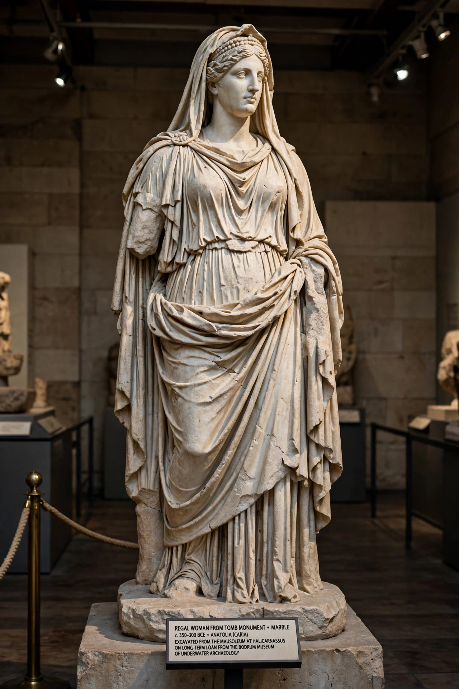

| Artemisia II | |
|---|---|
| Satrap (queen) of Caria | |
| Reign | 353 – 350 BC |
| Predecessor | Mausolus |
| Successor | Idrieus |
| Spouse | Mausolus (also her brother) |
| Father | Hecatomnus |
| Dynasty | Hecatomnid |

Artemisia II of Caria was the sister and wife of Mausolus, satrap of Caria under the Persian Empire, and succeeded him as ruler of Caria from 353 to 350 BC. She is chiefly remembered for completing the tomb of Mausolus at Halicarnassus — the Mausoleum, counted among the Seven Wonders of the Ancient World and the source of the modern word "mausoleum."
Artemisia was a daughter of Hecatomnus, founder of the Hecatomnid dynasty of Carian satraps. In accordance with dynastic practice she married her full brother Mausolus and shared his rule; the pair governed Caria from their new capital at Halicarnassus (modern Bodrum) and extended their influence over Lycia and Greek cities of the coast. When Mausolus died in 353 BC, Artemisia succeeded him alone — a rare female ruler of the age — and held Caria firmly for two years.
Artemisia drove forward the construction of her husband's monumental tomb on a terrace overlooking Halicarnassus harbour. Designed by the architects Satyros of Paros and Pythius of Priene, the Mausoleum combined Lycian, Greek and Egyptian elements: a high podium, an Ionic colonnade of 36 columns, a stepped pyramidal roof and a crowning four-horse chariot (quadriga) carrying statues of the royal couple. The four most celebrated sculptors of the day — Scopas, Bryaxis, Leochares and Timotheus — each carved one side. The tomb survived largely intact for over a millennium before crusader-era earthquakes and stone-robbing destroyed it; fragments, including colossal statues thought to represent Mausolus and Artemisia, are now in the British Museum.
Ancient writers made Artemisia a byword for conjugal devotion — and excess. According to Aulus Gellius and Valerius Maximus, she mixed Mausolus's ashes with her drink and consumed them daily, making herself a "living tomb." She instituted famous games and prizes for panegyrics on Mausolus, attracting speakers including Theopompus and Isocrates. She also suppressed a Rhodian attack on Halicarnassus by a ruse, capturing Rhodes's fleet and erecting a trophy in Rhodes itself. Artemisia died in 350 BC and was succeeded by her brother Idrieus.